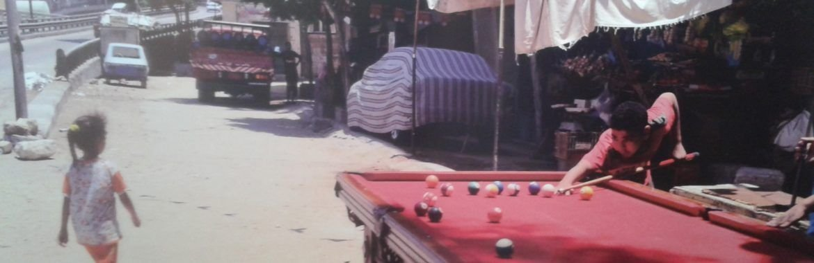
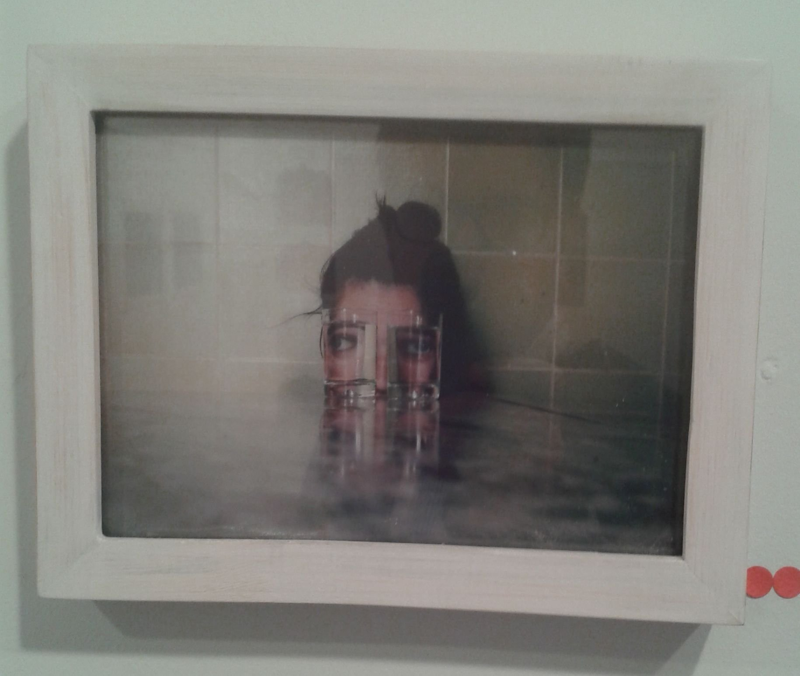
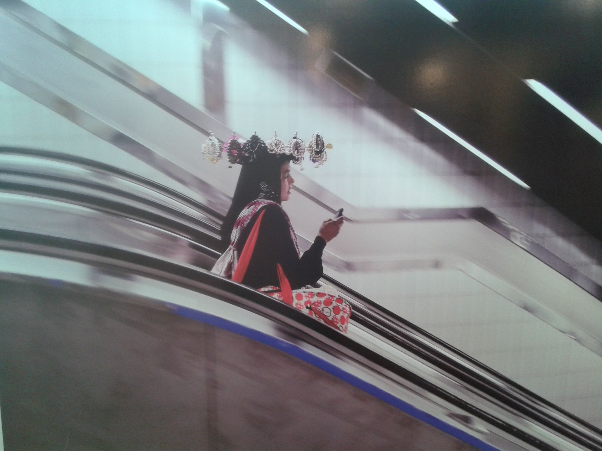

Originally published in Mada Masr on 23 December 2014
By Ismail Fayed
There is something reassuring about seeing framed pictures on a gallery wall by virtual unknowns as young as 19. And yet there's also a sense of wariness that these aspiring artists are going to get entangled in the politics of what contemporary visual arts are and how to situate themselves in relation to them.
In Third Eye, an exhibition selected and curated by artist Hala ElKoussy at Mashrabia, we come face to face with the talents of five young photographers displaying their works for the first time in a gallery. ElKoussy witnessed the recent visual explosion of all kinds of images on social media — where she is active herself as administrator of the Facebook page Foto Masr — and followed these artists and their work. After three months of dialogue with them and their practices, the exhibition was born.

Detail of photograph by Nadia Mounir showing her sophisticated compositional approach. Courtesy: Nadia Mounir
The images include pictures taken by mobile phone cameras and others taken by digital cameras, mostly all printed on photo paper. They vary considerably in size and presentation. Some are hung on the wall in little wooden frames, giving them the familiarity of family portraits, others are mounted in large frames, more typical of a photography exhibition, and some are just hung with no frames, more like postcards.
The show highlights the fundamental change in how a younger generation perceives "lens-based" practices, how they choose to see and what they use to see. Their concerns and subjects seem tied to the phenomenon of the viral production of imagery and its dissemination over virtual channels, such as social media. The show thus gives insights on how a younger generation understands the image, image making and image consumption.
ElKoussy casts the artistic process of image-making in the here and now as political, particularly in reference to an increasingly hostile political context, as she writes on the exhibition's Facebook page: "Their images can be read as a meditative expression of their ideas on lofty notions such as freedom, equality and living together." This idea can be seen as problematic, in light of how easily images are produced and consumed. Relaying reality through images is already a political act in and of itself, so why single out any image-based practice as a political gesture? To define it as such — for example as a mode of resistance to the status quo — unnecessarily burdens the work and creates the expectation that it's somehow ideological or revolutionary.
ElKoussy explains that her interest in the works of these artists stems from their engagement with their precarious environment: "The photographers included in this exhibition construct a personal regime of vision, and with it they excavate for an open space to breathe in the depths of an explosive reality." And, as such, many of the photos fall somewhere between an investigation of the urban landscape with its many clichéd subjects (the Nile Corniche, rundown parts of downtown Cairo, medieval Cairo and so on) and a more personal exploration of each of the artist's relation to his/her reality. And it is this kind of personal exploration that creates the more interesting works in the exhibition.

Exhibition view of Third Eye showing the varied presentation formats - from small family-portrait style frames to larger gallery-style mounting
For example, the self-portraits of Sherifa Hamed (b. 1997) show playfulness and raise relevant questions on issues such as presence (she "vanishes" in an underwater self-portrait and we can barely make out her blurred silhouette). And in one of the many mobile snaps by Amr Adel (1989), we see a pick-up truck completely filled with trash and on its tailgate is written "God is there." This kind of humor, sarcastic takes on the odd situations the artists face, and the precarious condition that ElKoussy discusses, is what lingers most in the spectator's memory.
It comes as no surprise that out of the five artists, Nadia Mounier (1988), the eldest, shows a remarkable maturity in her work and a visual complexity that reveals a competence that only comes with experience and habit. Her large-scale photographic images tell peripheral stories with visual astuteness. One shows a young girl who sells bangles and beads in the metro, photographed by Mounier going down the escalator, holding a rack of beads over her head while staring at her phone. Another, even more outlandish work shows two young boys playing billiards on a red pool table, right next to the abutment of a bridge. Mounier seems to take interest in the marginal and the unusual, transforming it into an elaborate composition.

Nadia Mounir's work capturing marginal urban scenes with sophisticated visual composition, showing her mature approach to street photography
Yet this is not to say that age is the decisive factor for which artists stand out in the exhibition. The black-and-white photos of Ziyad Tarek Hassan (1991), usually of slanted perspective, reflect an interesting sense of geometry and an effortless eye for architecture and form. Hassan is at his best when he is dissecting an urban landscape through lines and form. And some of Amr Adel's mobile snaps show a nascent sense of narrative that holds potential for further exploration and experimentation.
Perhaps it's the small frames of Tesneem Abdel Rahman (1994) that are the most reminiscent of ElKoussy's own work. Many framed photographs form a series on the artist's exploration of abandoned parts of the city. It brings to mind ElKoussy's series in her 2013 Mashrabia exhibition, Journey Around my Living Room. The frames vary in size but are mostly on the small side. The textured quality of what is being photographed, particularly visible in photos of houses and their interiors, is what stands out from Abdel Rahman's series.
Third Eye debuts five young artists and, as such, is a welcome event in the context of increasing polarization between an atrophying scene sponsored and controlled by the Egyptian state, and a more and more isolated contemporary visual arts scene that finds its support elsewhere. While contemporary art is by definition a niche practice, in other contexts it has managed to infect other disciplines and find a way into more mainstream channels. The scene in Cairo awaits this sort of much-needed development.
It could be exciting to see how these young artists go about exploring their practices without the unnecessary legacy of artist as representative of his/her reality or artist as functionary of the state — as can be seen in recent curatorial projects in Egypt and the region, there is almost always an emphasis on artists "representing" their reality, rather than engaging in wider artistic projects with individual artistic interests. Expansive artistic appetites and broader preoccupations make for a more exciting and less identity-oriented work than art practices that are strictly defined as representative of their context, in a political or ceremonial fashion.
"Third Eye" showed at Mashrabia Gallery until January 13, 2015.